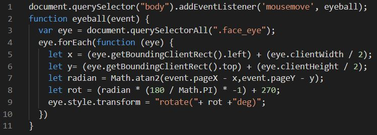

Blog Entry #5
10/7/2021
Mouse Tracking With Javascript
I remember seeing a site a while ago with a logo at the top of the page that would follow your cursor around the screen as you moved it. I thought this was pretty neat, but when I tried to look into replicating it I saw it required Javascript. So I decided to wait until we covered JS so I would have a better handle on it. I guess now is that time!
The principle is pretty simple. First, use HTML and CSS to create a face or whatever image or symbol you want to react to the cursor. You'll need an event listener on the "mousemove" keyword. Then, all this code really does is run some equations to convert the x and y position of the cursor to a corresponding value in degrees. In the above case, we rotate the eyes of the face that many degrees, pupils and all, giving the impression of cursor tracking.
Then I found this.
These eyes, the animations, and the cursor tracking don't use any Javascript at all! Instead, the creator stacked up a bunch of "hitbox" divs which trigger actions when hovered over. You can notice this if you move the cursor around the eyes slowly. Instead of smoothly following the mouse, the pupils jump to a different position when you reach a new hitbox. This also means the effect only works when you get within about 500 pixels of the eyes. The code is much messier, but it's still crazy to me what CSS alone can accomplish in the right hands.